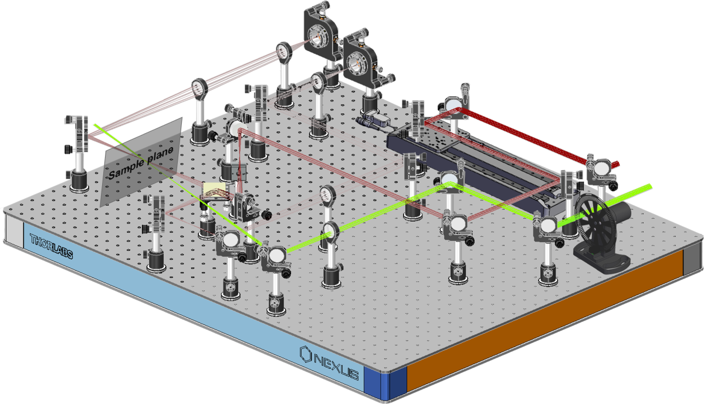
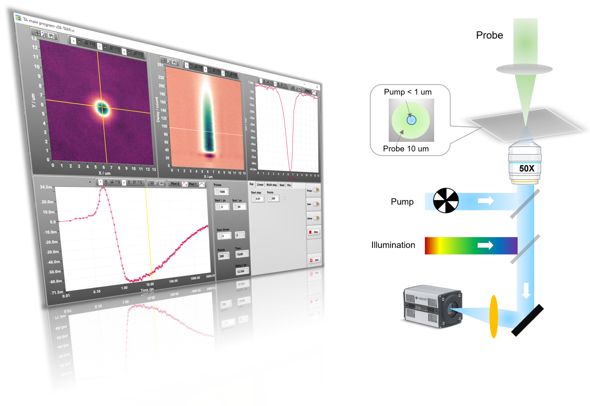
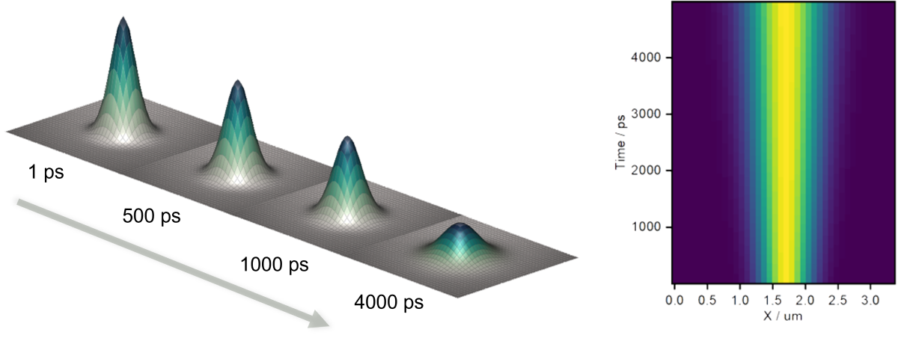
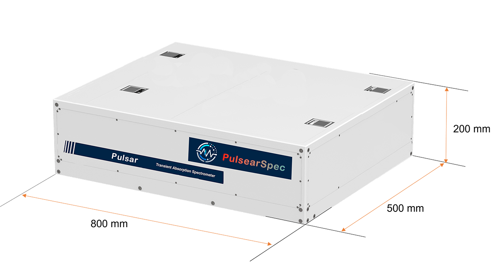

Pulsar is an automated femtosecond Transient Absorption Spectrometer. It is designed to work with a variety of amplified femtosecond lasers, including high-energy Ti:Sapphire amplifiers and high repetition rate Yb amplifiers. Together with our patented tirgger technique, Pulsar delivers an unmatched level of performance and user-friendliness.
All-in-one box design
Pulsar, designed for optical laboratories, is ideally suited for use above optical tables. Its compact, all-in-one box design benefits from advanced lock-in technology. This innovation allows for all real-time processing to be completed by the hardware, significantly reducing the PC's workload and enhancing system fidelity. This design not only optimizes lab space but also ensures efficient and high-quality performance in optical experiments..
TA OEM options
Besides the whole Transient Absorption spectrometer setup. We also offer the TA OEM version for those who are interted in customize TA setup. When you choose this verison, you can buy parts yourself and build your own TA, at the same time, we will provide customized software for intrument automation. By integrating our unique Phase Lock Device to the TA setup, the control software programing will become much easier and reliable.

Sample holder options
The magnetic stirrer allows for working with closed cuvettes (≥2 mm long) and can work with a simple cuvette holder. The translating sample holder can raster thinner cuvettes (which cannot be stirred easily), films, wafers, etc. The translating sample holder can work with transmissive as well as reflective samples.
TAM extension

Transient Absorption Microscopy (TAM) extension is an advanced technology designed to provide unparalleled temporal and spatial resolution. This enhancement is crucial for investigating the diffusion processes of excited states in materials. Our innovative TAM design proudly stands as the first of its kind to apply the conjugate imaging technique. This groundbreaking approach significantly enhances imaging quality and improves time resolution, setting a new standard in the field. Our TAM extension opens new avenues for in-depth material analysis and research, offering precise insights into dynamic processes at a microscopic level. To discover more about how our TAM extension can revolutionize your research and for further information on its applications, feel free to contact us.

6 ns time window. Extendable to ms.
The nanosecond window is achieved by using a direct-drive high-speed optical delay line. Custom-designed mounts are employed for the delay line optics to increase the beam alignment reproducibility and overall reliability. This delay line features high resolution as well as high speed. Scanning at high speeds is very important because it allows for pseudo-random stepping without a significant increase in the experiment time. This type of stepping is very useful for minimizing the effects of laser instability and sample degradation.
The standard 6 / 12 ns time window is extendable to milliseconds with the EOS add-on.
Optical delay line specifications:
Time window:
6/12 ns
Resolution:
14 fs
Minimum step size:
2.8 fs
Max. speed:
>10 ns/s
Acceleration:
> 260 ns/s^2
Beam pointing drift:
<10 µm over 6 ns delay range
Probe reference option
Pulsar has an option for second probe (reference) channel. In this case, the probe beam is split into two before passing through the sample. While one arm travels through the sample, the other is sent directly to the reference spectrometer that monitors the fluctuations in the probe beam intensity. The main advantage of this approach is that it allows the user to achieve the specified signal-to-noise ratio with a lower number of averaged laser pulses. This method is recommended for experiments with low repetition rate and/or easily photodegradable samples where the number of laser shots is strongly limited.
Specifications
Main Technical Indicators
Description
Detection Mode
Switchable transmission or reflection mode
High-Speed Spectrometer
Visible/NIR spectrometer with up to 4KHz acquisition rate, capable of full-spectrum acquisition in one go without the need to rotate the grating
White Light Spectral Range
330nm to 1600nm
Intelligent Optical Delay Line
Maximum speed of 400mm/s, precision of 0.1 microns with automatic calibration for delay line back-reflection path
Detection Time Window
6/12 ns (expandable to ms)
Instrument Time Response Function (IRF)
Regular mode 1.5 times the laser pulse width
Pre-zero Signal-to-Noise Ratio
≤0.1mOD
Data Acquisition Software
Real-time observation of data collection and spectral dynamic changes, data point averaging, multi-curve dynamic comparison, chirp correction, zero-time correction functions, single exponential or multi-exponential power index global fitting, and other modes of data fitting programs
Expansion Functions
Expandable to micro-area detection module, ultra-fast fluorescence module, transient absorption imaging module, mid-infrared detection module, nanosecond detection module, third beam excitation light, and TCSPC fluorescence lifetime module
Features
Enhanced Usability
Automatic two-dimensional electronic control anti-damage sample stage with editable movement trajectories
Micro-solution magnetic stirrer for efficient mixing
Compatibility with cryostats, probe stations, electrical control devices, and external magnets for comprehensive coupling options
Dimension
Pulsar is designed to fit in the optical lab, and best to working above optical table. The spacious design provide multiple posibility for cutormer employ some home made design experiments.

Documents
Some documents are provided under resonable request. We also provide data processing software that made result visualization fast and accurate.